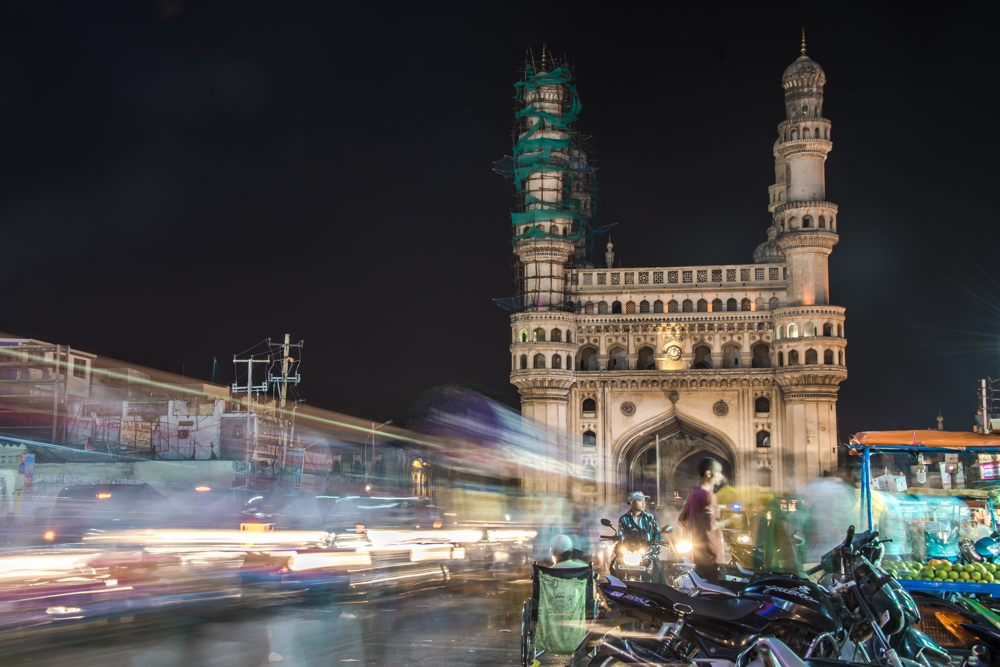
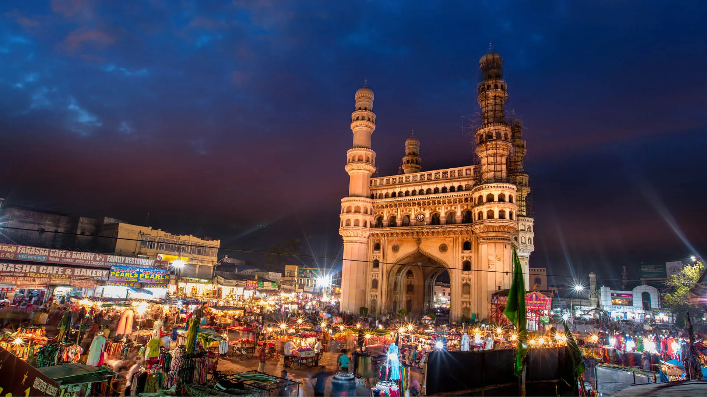
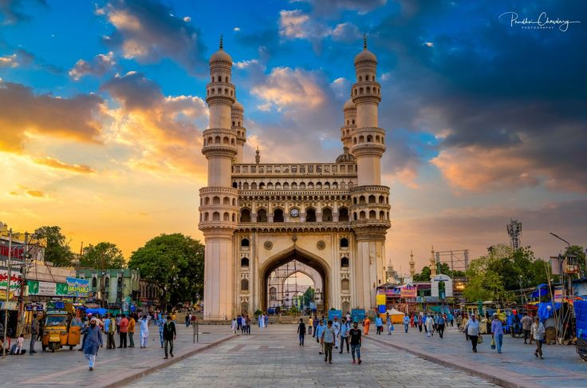

|  |  |  | |
|---|
Charminar is a monument and a mosque, which is synonymous with the history of Hyderabad, India. The majestic structure was completed in 1591 CE and is not only a landmark building of Hyderabad but also a famous monument of India. It is believed that Mohammed Quli Qutb Shahi, the fifth sultan of the Qutub Shahi dynasty had built the monument to commemorate the end of a deadly plague menace that had gripped the city then. It is located near the bank of the river Musi. Charminar is derived from two distinct words Char and Minar, which means four towers. Mir Momin Astarabadi of Qutb Shah dynasty played an important role and he ordered extensive preparations for the design and layout. Historians believe that this structure is an example for Indo-Islamic architecture combined with few Persian elements. The monument is located in the heart of old city and it is believed that Hyderabad was measured in four directions from Charminar for administrative purposes.
A visit to Hyderabad is incomplete without visiting this grand and majestic centerpiece. It is also considered the Arc de Triomphe of the East. Some of the historians say that it was built it in honor of his wife, Bhagyamathi. There is also legend that tells about the existence of a secret tunnel underneath the monument connecting the fort at Golconda that was created as a means of escape to royal family in an emergency. Each of the sides measure 20 meters while the minarets are located at a height of 48.7 meters from the ground level. Each side of Charminar opens into a plaza like structure where the giant arches overlook the major thoroughfares. It is a clear square structure that measures 31.95 mts. on each side while imposing arches span a distance of 11mts. The four minarets rise to a height of 56 mts. The ornamental arches on the minarets enhance the aesthetic value. There are 149 circular steps inside each minaret and one of them is open for tourists to climb and enjoy a breathtaking view of the city. It also houses the oldest mosque in Hyderabad with prayer spaces for the devout to worship.
Islamic architecture of those times is marked by arches, minarets, and domes. The structure is famous for its profuse stucco decorations and arrangement of impressive balustrades and balconies. The floral design is executed delicately and stands as a masterpiece to the combination of Mughal and Hindu architecture crafted by the local artisans. The four clocks in four cardinal directions were added in the year 1889. The base of Charminar has a water cistern located at center which consists of a small fountain for ablutions, before the faithful offer prayers in the mosque. Charminar has become synonymous with the culture of old city of Hyderabad and the area is also a popular destination for lip smacking Muslim dishes, colorful bangles, pearls, jewellry and other items. The place is a symbol of Hyderabadi culture and stands tall and proud as a reminder of the glorious era.
Charminar is located in the heart of old city and is easily accessible by road from various parts of Hyderabad.
All Days of the Week : 9:00 AM - 5:30 PM